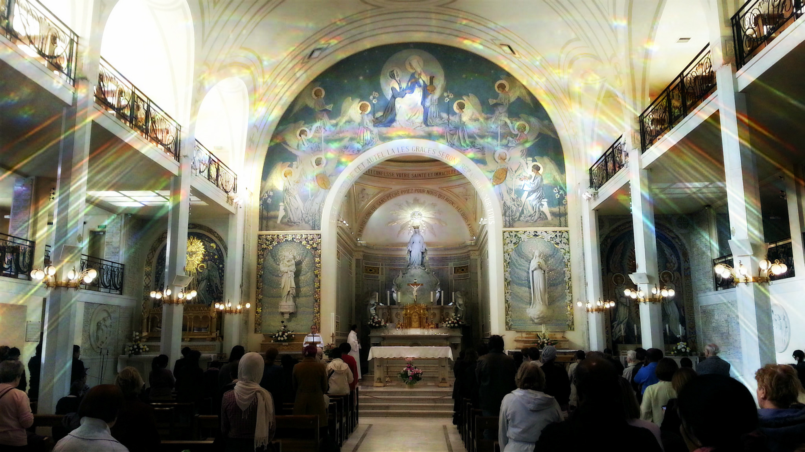

Forming young hearts in extraordinary devotion to Our Blessed Mother.

The Children of Mary is an organization for young people between the ages of 7 and 18 who wish to consecrate themselves in a special way to Our Blessed Mother.
Our flagship program introduces St. Philomena, the power of her intercession, and the integrity of her example to the youth of the 21st century.
Learn more about the program